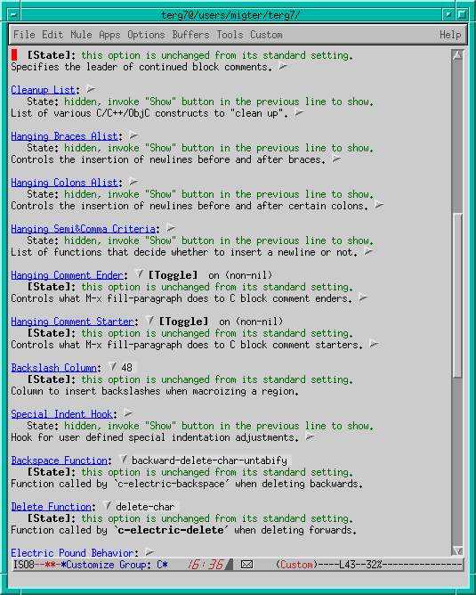

![[ TABLE OF CONTENTS ]](../gx/indexnew.gif)
![[ FRONT PAGE ]](../gx/homenew.gif)


This column is devoted to making the best use of Emacs, text editor extraordinaire. Each issue I plan to present an Emacs extension which can improve your productivity, make the sun shine more brightly and the grass greener.
Typical applications have a configuration file which allows you to set the value of a few variables. Emacs goes a lot further, since the user can customize pretty much any feature of the system. This flexibility is due to a majority of the system being written in its extension language. The first implementations of Emacs used a cryptic string processing language named TECO (you thought Perl was cryptic? Look at TECO), with support code in PDP-10 assembly; later versions use Emacs Lisp as an extension language, with some components (the Lisp interpreter and the display code) written in C.
This extensibility is fundamental to Emacs. Users can experiment with modifications and improvements to the system and pass them on to friends if they work well; ideas which catch on can be integrated in the core distribution. The now defunct Lisp Machines at MIT extended this openness to the level of the operating system, which was written in Lisp (and ran on custom hardware, specially designed to run Lisp efficiently). Lisp Machine users had a far greater degree of control over their machine than Linux users today. The Smalltalk systems at Xerox Parc provided a similarly deep level of customization.
Indeed, there is a profound difference between the development philosophy which led to Emacs (the MIT approach), and that which led to Unix and C (the New Jersey approach). These are compared in an excellent paper by Richard Gabriel called Worse is Better, from which I have extracted the following:
Two famous people, one from MIT and another from Berkeley (but working on Unix) once met to discuss operating system issues. The person from MIT was knowledgeable about ITS (the MIT AI Lab operating system) and had been reading the Unix sources. He was interested in how Unix solved the PC loser-ing problem. The PC loser-ing problem occurs when a user program invokes a system routine to perform a lengthy operation that might have significant state, such as IO buffers. If an interrupt occurs during the operation, the state of the user program must be saved. Because the invocation of the system routine is usually a single instruction, the PC of the user program does not adequately capture the state of the process. The system routine must either back out or press forward. The right thing is to back out and restore the user program PC to the instruction that invoked the system routine so that resumption of the user program after the interrupt, for example, re-enters the system routine. It is called PC loser-ing because the PC is being coerced into loser mode, where loser is the affectionate name for user at MIT.
The MIT guy did not see any code that handled this case and asked the New Jersey guy how the problem was handled. The New Jersey guy said that the Unix folks were aware of the problem, but the solution was for the system routine to always finish, but sometimes an error code would be returned that signaled that the system routine had failed to complete its action. A correct user program, then, had to check the error code to determine whether to simply try the system routine again. The MIT guy did not like this solution because it was not the right thing.
The New Jersey guy said that the Unix solution was right because the design philosophy of Unix was simplicity and that the right thing was too complex. Besides, programmers could easily insert this extra test and loop. The MIT guy pointed out that the implementation was simple but the interface to the functionality was complex. The New Jersey guy said that the right tradeoff has been selected in Unix: namely, implementation simplicity was more important than interface simplicity.
Let me come back to more concrete issues. The traditional way of customizing [X]Emacs is to write simple Emacs Lisp expressions in a file called .emacs in your home directory. These expressions can either set the value of a variable, or call a function, or load a library :
;; set the values of a few variables. `t' stands for true and `nil' for
;; false
(setq dired-listing-switches "-alF")
(setq tab-width 4)
(setq line-number-mode t)
(setq global-font-lock-mode t)
(setq next-line-add-newlines nil)
;; call a function which will organize to have the time displayed in
;; the modeline
(display-time)
;; load an Emacs Lisp library and call its initialization function
(require 'jka-compr)
(auto-compression-mode 1) |
The syntax tends to irritate people (who deride the presence of ``Lots of irritating spurious parentheses''), but using a fully-featured programming language in a configuration file has genuine and significant advantages. It allows you to test for features of the local setup, for example :
(if (file-exists-p "/bin/bash")
(setq explicit-shell-file-name "/bin/bash"))
|
which makes Emacs use the bash in *shell* buffers if it exists on the machine. Another reason for using a real language for setup files is that it avoids the endless proliferation of configuration files, each with its own ideosyntractic syntax (think ~/.Xdefaults, window manager setup files, ~/.inputrc, ~/.procmailrc, etc). Hopefully the spreading use of Guile as an embedded scripting language will resolve this problem. A last advantage is that a genuine programming language empowers the user. Indeed, in one of the first technical reports about Emacs, Richard Stallman presents this as an important goal:
When large numbers of nontechnical workers are using a programmable editor, they will be tempted constantly to begin programming in the course of their day-to-day lives. This should contribute greatly to computer literacy, especially because many of the people thus exposed will be secretaries taught by society that they are incapable of doing mathematics, and unable to imagine for a moment that they can learn to program. But that won't stop them from learning it if they don't know that it is programming that they are learning!
Recent versions of [X]Emacs include a package called Customize, which helps you adapt Emacs to your liking without writing any Lisp. Customize is written by Per Abrahamsen, also the author of the popular Auc-TeX package for TeXnical typists. It allows users to visualize the list of all the user-configurable variables in Emacs, and to modify them to their liking. You can reach Customize (it only exists on recent Emacsen) from the Help -> Customize menubar. In XEmacs it looks like this:

Customize requires each Emacs Lisp library to declare the user-modifiable variables it exports. The type of the variable is specified, whether boolean or integer or string or selection from several options, and several variables can be put in the same group, which allows a hierarchical presentation of information. The modification screens are then generated automatically on demand. It's an elegant design, since programming the thousands of dialog boxes manually would be a huge job, and require large amounts of storage. The modifications made by the user are stored in a file which is read by [X]Emacs at initialization time.
An unfortunate aspect of Customize is that it introduces two methods of doing the same thing. Users wanting to go beyond the simple customizations possible with the graphical interface will be confronted with an entirely new way of doing things, and may be put off. There is a difficult path to tread between making simple things simple and complex things possible and the old adage Build a system that a fool can use, and only a fool will use it.
Keybindings are a particularly treacherous field for customization, the principal problems comings from differences between X11 and console operation (particularly with the backspace key), and between the syntax used by Emacs and XEmacs. One of the first things you might want to do is set the Delete, Home and EndOfLine keys to their standard meanings in the PC world :
(pc-selection-mode) ; pc-select.el
|
This will also allow you to select regions of text with shift and the cursor keys, and Cut/Copy/Paste with Shift-Delete, Control-Insert and Shift-Insert respectively. You can bind function keys as follows (this syntax should work equally well with Emacs and XEmacs) :
(define-key global-map [(f2)] 'save-buffer)
(define-key global-map [(f4)] (lambda () (interactive) (kill-buffer nil)))
|
The first line makes the F2 key save the current buffer (by binding to the built-in function save-buffer), and the second shows how to bind to your own function: the lambda introduces an anonymous function in Lisp; the (interactive) means that you will be able to access the function interactively, the rest kills the current buffer without asking confirmation. The global-map means that these bindings apply everywhere in Emacs, whether you're reading email or composing some HTML. You can also define local key bindings, which apply only to buffers which are in specific modes :
(define-key emacs-lisp-mode-map [(control c) (control e)] 'eval-buffer)
(define-key c-mode-map [(f5)] 'compile)
|
The Emacs FAQ (available online by saying C-h F) presents another method of binding keys, which may not work across Emacs versions. Jari Aalto has written a long guide to keybindings which describes many different ways of rebinding keys.
If you are lucky enough to have a Windows 95 keyboard you can put those lovely keys to use in X11 with a little xmodmapping. The X Window System has five possible key modifiers, the first three being Shift, Control and Alt on PC keyboards. You can set the windows keys to Super and Hyper modifiers as follows (this is for a French keyboard; use xev to work out the keycodes for your keyboard) :
(shell-command (concat "xmodmap "
"-e 'keycode 115 = Hyper_L' "
"-e 'keycode 116 = Hyper_R' "
"-e 'keycode 117 = Super_L' "
"-e 'add mod4 = Hyper_L' "
"-e 'add mod4 = Hyper_R' "
"-e 'add mod3 = Super_L' "))
(message "Setting up Hyper and Super keys")
(define-key global-map [(hyper tab)] 'complete-tag)
(define-key global-map [(super !)] 'speedbar-get-focus)
|
In its default configuration, Emacs makes backups with a tilde appended to the filename, in the same directory as the original file. If you would prefer having all backups in one spot, try the following code. Emacs can also keep a series of numbered backups à la VMS; look at the variable version-control.
;; make backup files in ~/.backups/ rather than scattered around all
;; over the filesystem.
(defun make-backup-file-name (file-name)
"Create the non-numeric backup file name for `file-name'."
(require 'dired)
(if (file-exists-p "~/.backups")
(concat (expand-file-name "~/.backups/")
(dired-replace-in-string "/" "|" file-name))
(concat file-name "~")))
;; disable backups for files in /tmp or in my Mail or News directories.
(defun ecm-backup-enable-predicate (filename)
(and (not (string= "/tmp/" (substring filename 0 5)))
(not (string-match "/Mail/" filename))
(not (string-match "/News/" filename))))
(setq backup-enable-predicate 'ecm-backup-enable-predicate)
|
These are only a few examples of things which can be customized in [X]Emacs. Here are a few pointers to further sources of inspiration :
Vincent Zweije wrote to me regarding my gnuserv column, where I suggested using cat /etc/passwd | md5sum as a means of generating a cookie for xauth.
|
In <URL:http://linuxgazette.net/issue29/marsden.html>, you wrote:
Or maybe more dangerous, send insulting email to the president of an arbitrary banana republic. :-)
You have picked an unlucky example. There is a real danger that /etc/passwd is stable over a long period. This means that it will generate the same magic cookie for many times. This is a problem when you have given a cookie away (either voluntarily or involuntarily), and intend to revoke permissions by generating a new cookie. Best is to select a source of data that is volatile such as the output of ps -al or /proc/interrupts, or use mcookie, as you indicated later. |
These remarks are particularly important if the site is using shadow passwords. Vincent noted that security issues are too important to be left to ordinary users :
|
Come to think of it, it's probably just a bad idea to let ordinary users arrange their own security, as with magic cookies. They're just not enough concerned with security - they want to get their job done. You'd be amazed at how many times on usenet I've seen suggested to do "xhost +" to allow X connections from anywhere. Such people often don't even realise that they're dealing with security. They see disallowing X (gnuserv) connections as a hindrance, and just want a magic incantation to remove it. It's a perception thing. Someone who deals with security simply has to know what he's doing. However, first you have to realise that it is security that you're playing with. |
Next month I'll look at the different abbreviation facilities in
Emacs. Don't hesitate to contact me at
<emarsden@mail.dotcom.fr> with comments, corrections or
suggestions (what's your favorite couldn't-do-without Emacs
extension package?). C-u 1000 M-x hail-emacs !
PS : Emacs isn't in any way limited to Linux, since implementations exist for many other operating systems (and some systems which only halfway operate). However, as one of the leading bits of free software, one of the most powerful, complex and customizable, I feel it has its place in the Linux Gazette.
EMACSulation #1, February 1998
EMACSulation #2, March 1998
EMACSulation #3, April 1998
EMACSulation #4, June 1998